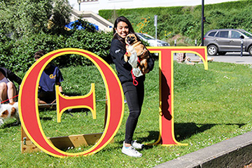
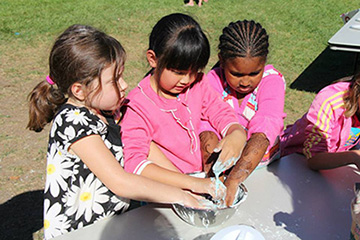

Hi! My name is Amy and I grew up in Taipei, Taiwan. I moved to the US in 2012 to attend UC Berkeley, and it’s safe to say my conversion to being a California girl is almost complete.
I love everything cute and majestic (think: samoyeds and hiking), and spend my time (maybe embarrassingly) collecting cats in neko atsume or exploring the beautiful area we live in. My friends say I’m friendly, quirky, and have a touch of neuroticism, and I’m always down to meet new people or try new things. Thanks for visiting my website—it’s still a work in progress, but I hope you enjoy learning a little bit about me!
I am very passionate about people, and the idea of helping enable people to live their lives to the fullest. This led me to choose a career in healthcare—because of my affinity towards engineering, I enrolled in the COE as a bioengineering major. I’ve worked in teams to create many cool products, such as a lie detector test or a swivel seat to assist the elderly, and I’m grateful that there have been resources to allow me to build real things. I’ve worked in biotech through the Drug Substance Automation department at Genentech, and worked in biomedical devices through Product Quality Engineering at Abbott (in their Diabetes Care division). My experiences have been awesome thus far; I have a huge sense of fulfillment when I know my role directly and positively impacts how others live their lives. Consequently, I’m excited to start work full-time at Abbott this Fall as an analyst in their rotational program!
.


As I mentioned before, I care about people and this leads me to engage in our community. I’m in Theta Tau, and have been the Philanthropy chair for two terms. During this time, we’ve done exciting events like the Discovery Expo (a children’s science/engineering fair) and Puppies on the Patio, to name a few. When I can, I love mentoring younger students to foster a love of science in them, too. I get excited when involving lots of people towards a common cause—and I think that doing community service events truly brings people together.
I am also very much enamored with art and travel and immersing myself into different cultures. I’ve had the good fortune of traveling to upwards of 30 countries (my favorites so far have been New Zealand, Turkey, and Greece), and I’m trying to keep it going. I try to document my journeys, wherever I go, in photos (and my recent obsession with vsco has propelled the number of photos I take), and you can see an example of my grid above. I’m trying to get better at capturing the moment, and all the feelings associated with that moment. In my spare time, I love making cards, pen and ink drawings, and painting for fun, and am trying to learn more about design, typography, and making websites!